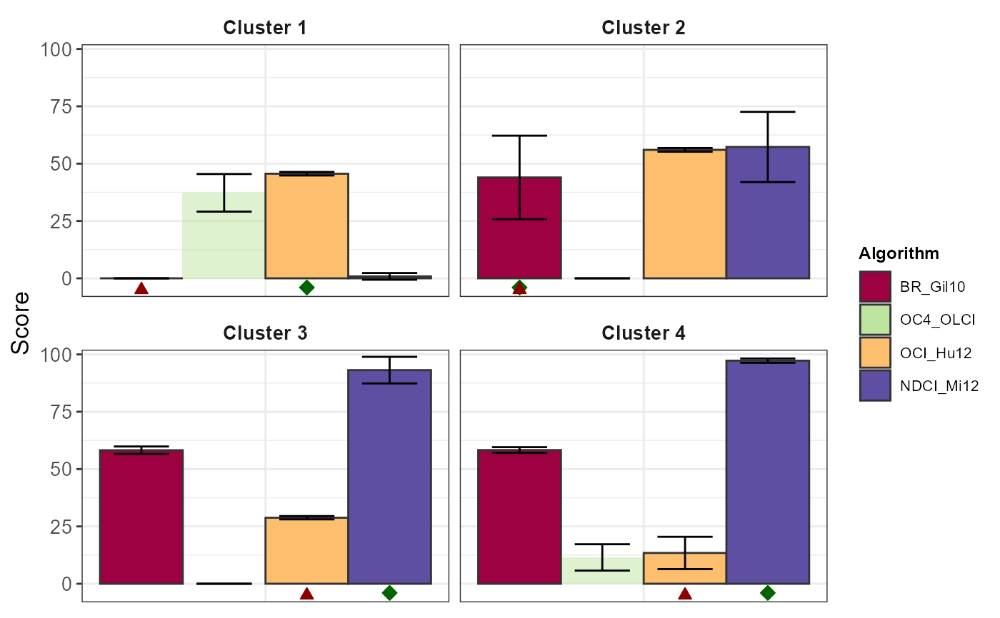

R/Algorithms_assessment.R
Scoring_system.RdThe main function for algorithms scoring based on accuracy, precision, and effectiveness.
Scoring_system( Inputs, method = "sort-based", param_sort = list(decreasing = TRUE, max.score = NULL), param_interval = list(trim = FALSE, reward.punishment = TRUE, decreasing = TRUE, hundred.percent = FALSE), remove.negative = FALSE, accuracy.metrics = c("MAE", "CMAPE"), precision.metrics = c("BIAS", "CMRPE") ) Scoring_system_bootstrap( Times = 1000, Inputs, replace = TRUE, method = "sort-based", metrics_used = 1, param_sort = list(decreasing = TRUE, max.score = NULL), param_interval = list(trim = FALSE, reward.punishment = TRUE, decreasing = TRUE, hundred.percent = FALSE), remove.negative = FALSE, dont_blend = FALSE, verbose = TRUE )
| Inputs | The list returned form function Getting_Asses_results |
|---|---|
| method | The method selected to score algorithms:
|
| param_sort | The parameters of function Score_algorithms_sort |
| param_interval | The parameters of function Score_algorithms_interval |
| remove.negative | Option to replace the negative score as zero (default as |
| accuracy.metrics | accuracy used metrics, default as |
| precision.metrics | precision used metrics, default as |
| Times | Parameter of |
| replace | Parameter of |
| metrics_used | The metric combination used in the function. Default is If If |
| dont_blend | Whether to runing the algorithm blending process. Default is |
| verbose | Show the iteration message. |
The result of Scoring_system are including:
Total_score Data.frame of final score result with algorithm as column and cluster as row.
Accuracy Data.frame of Accuracy score with algorithm as column and cluster as row.
Precision Data.frame of Precision score with algorithm as column and cluster as row.
Effectiveness Data.frame of Effectiveness score with algorithm as column and cluster as row.
Accuracy_list List including data.frames of used Accuracy metrics.
Precision_list List including data.frames of used Precision metrics.
Total_score.melt Melted data.frame of Total_score for plotting.
Opt_algorithm The optimal algorithm names for each cluster.
Inputs Inputs of this function.
The result of Scoring_system_bootstrap are including:
Times The times of bootstrap running.
Score_all_clusters The total score for algorithms across all clusters.
Score_list All times of bootstrapping results are recorded in it.
Score_list_melt Melted Score_list.
Opt_algorithm_list The optimal algorithm for every runing.
Opt_algorithm The optimal algorithm defined by mode of Opt_algorithm_list
for each cluster.
Remove_algorithm The algorithms to be removed when blending.
plot_col The col plot of Score_list_melt.
plot_scatter The scatter plot of measured and predicted Chla concentration colored by clusters.
plot_scatter_opt The scatter plot of measured and predicted Chla concentration colored by clusters for optimized algorithms.
Blend_result The results from the inherent function Chla_algorithms_blend.
dt_Chla Data.frame with combination of candidate algortihms and blended results.
Chla_blend The blended Chla concentration by score results.
Results_of_scoring_system A list including all results of Scoring_system function.
metric_results A result of Assessment_via_cluster which includes the Chla blend results.
The Accuracy and Precision is newly defined in FCMm package (referred by
Hooker et al. (2005)):
Accuracy is the estimation of how close the result of the experiment is to the
true value.
Precision is the estimation of how excatly the result is determined independently
of any true value.
In other words, Accuracy is telling a story truthfully and precision is how similarly
the story is represented over and over again.
Here we use AE, a vector for each sample, for instance:
Accuracy is the aggregation (no matter mean or median, in fuzzy calculation process),
we use mean to some extent.
Precision is actually the stability of AE (reproducebility) which means the error
produced by the algorithm is under certain control.
Finally, the function will multiply the total score (Accuracy + Precision) by the
effectiveness (i.e., Valid_percent returned by Assessment_via_cluster).
Scoring_system_bootstrap is the bootstrap mode of Scoring_system which is useful when
the outcome is unstable for large number of samples. The default boostrap time in Scoring_system_bootstrap
is set as 1000 and the result of it is the list of several aggregated data.frames and standard deviations.
Hooker S B. Second SeaWiFS HPLC analysis round-robin experiment (SeaHARRE-2)[M]. National Aeronautics and Space Administration, Goddard Space Flight Center, 2005.
Seegers B N, Stumpf R P, Schaeffer B A, et al. Performance metrics for the assessment of satellite data products: an ocean color case study[J]. Optics express, 2018, 26(6): 7404-7422.
Neil C, Spyrakos E, Hunter P D, et al. A global approach for chlorophyll-a retrieval across optically complex inland waters based on optical water types[J]. Remote Sensing of Environment, 2019, 229: 159-178.
Brewin R J W, Sathyendranath S, Müller D, et al. The Ocean Colour Climate Change Initiative: III. A round-robin comparison on in-water bio-optical algorithms[J]. Remote Sensing of Environment, 2015, 162: 271-294.
Moore T S, Dowell M D, Bradt S, et al. An optical water type framework for selecting and blending retrievals from bio-optical algorithms in lakes and coastal waters[J]. Remote sensing of environment, 2014, 143: 97-111.
Other Algorithm assessment:
Assessment_via_cluster(),
Getting_Asses_results(),
Sampling_via_cluster(),
Score_algorithms_interval(),
Score_algorithms_sort()
library(FCMm) library(ggplot2) library(magrittr) library(stringr) data("Nechad2015") x <- Nechad2015[,3:11] wv <- gsub("X","",names(x)) %>% as.numeric set.seed(1234) w <- sample.int(nrow(x)) x <- x[w, ] names(x) <- wv nb = 4 # Obtained from the vignette "Cluster a new dataset by FCMm" set.seed(1234) FD <- FuzzifierDetermination(x, wv, do.stand=TRUE) result <- FCM.new(FD, nb, fast.mode = TRUE)#>Chla <- Nechad2015$X.Chl_a..ug.L.[w] Chla[Chla >= 999] <- NA dt_Chla <- run_all_Chla_algorithms(x) %>% as.data.frame dt_Chla <- data.frame(Chla_true = Chla, BR_Gil10 = dt_Chla$BR_Gil10, OC4_OLCI = dt_Chla$OC4_OLCI, OCI_Hu12 = dt_Chla$OCI_Hu12, NDCI_Mi12= dt_Chla$NDCI_Mi12) %>% round(3) w = which(!is.na(dt_Chla$Chla_true)) dt_Chla = dt_Chla[w,] memb = result$res.FCM$u[w,] %>% round(4) cluster = result$res.FCM$cluster[w] Asses_results <- Getting_Asses_results(sample.size=length(cluster), pred = dt_Chla[,-1], meas = data.frame(dt_Chla[,1]), memb = memb, cluster = cluster) Score = Scoring_system(Asses_results) # show the total score table knitr::kable(round(Score$Total_score, 2))#> #> #> | | BR_Gil10| OC4_OLCI| OCI_Hu12| NDCI_Mi12| #> |:---------|--------:|--------:|--------:|---------:| #> |Cluster 1 | 0.00| 37.68| 47.83| 0.00| #> |Cluster 2 | 43.21| 0.00| 60.42| 52.47| #> |Cluster 3 | 54.46| 0.00| 27.23| 92.96| #> |Cluster 4 | 59.02| 17.62| 6.69| 95.08| #> |SUM | 62.14| 11.60| 36.73| 24.38|# Examples of `Scoring_system_bootstrap` set.seed(1234) Score_boo <- Scoring_system_bootstrap(Times = 3, Asses_results)#> ...# try to set large `Times` when using your own data # Show the bar plot of scores Score_boo$plot_col#> Warning: Removed 4 rows containing missing values (geom_col).#> Warning: Removed 12 rows containing missing values (geom_point).#> Warning: Removed 12 rows containing missing values (geom_point).# Show the scatter plot of measure-estimation pairs Score_boo$plot_scatter#> Warning: Removed 115 rows containing missing values (geom_point).#> Warning: Removed 949 rows containing missing values (geom_point).#> #> #> Table: MAE #> #> | | OCI_Hu12| BR_Gil10| NDCI_Mi12| Chla_blend| #> |:---------|--------:|--------:|---------:|----------:| #> |Cluster 1 | 0.24| 0.60| 0.75| 0.23| #> |Cluster 2 | 0.21| 0.26| 0.28| 0.37| #> |Cluster 3 | 0.31| 0.24| 0.18| 0.18| #> |Cluster 4 | 0.86| 0.30| 0.17| 0.18| #> |SUM | 0.37| 0.28| 0.34| 0.26|#> #> #> Table: CAPE #> #> | | OCI_Hu12| BR_Gil10| NDCI_Mi12| Chla_blend| #> |:---------|--------:|--------:|---------:|----------:| #> |Cluster 1 | 39.40| 101.26| 137.93| 37.99| #> |Cluster 2 | 31.12| 35.20| 40.28| 52.41| #> |Cluster 3 | 36.34| 31.35| 22.87| 22.14| #> |Cluster 4 | 67.62| 33.56| 19.58| 20.64| #> |SUM | 41.37| 36.69| 54.00| 35.96|#> #> #> Table: BIAS #> #> | | OCI_Hu12| BR_Gil10| NDCI_Mi12| Chla_blend| #> |:---------|--------:|--------:|---------:|----------:| #> |Cluster 1 | -0.01| 0.07| -0.69| -0.03| #> |Cluster 2 | -0.11| 0.15| 0.02| 0.26| #> |Cluster 3 | -0.24| -0.08| 0.01| 0.00| #> |Cluster 4 | -0.69| -0.26| 0.02| 0.00| #> |SUM | -0.23| -0.03| -0.14| 0.08|#> #> #> Table: CRPE #> #> | | OCI_Hu12| BR_Gil10| NDCI_Mi12| Chla_blend| #> |:---------|--------:|--------:|---------:|----------:| #> |Cluster 1 | -32.51| -41.12| -303.17| -52.63| #> |Cluster 2 | -20.34| 16.65| -8.68| 34.30| #> |Cluster 3 | -28.36| -12.08| -1.87| -3.08| #> |Cluster 4 | -51.92| -30.44| -1.14| -2.37| #> |SUM | -31.14| -6.35| -71.39| -0.94|# you would see the blending estimations outperform than other candidates